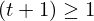
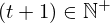

Show the Proof¶
In [1]:
import proveit
# Automation is not needed when only showing a stored proof:
proveit.defaults.automation = False # This will speed things up.
proveit.defaults.inline_pngs = False # Makes files smaller.
%show_proof
Out[1]:
| step type | requirements | statement | ||
|---|---|---|---|---|
| 0 | instantiation | 1, 2 | ⊢  | |
 : :  | ||||
| 1 | theorem | ⊢  | ||
| proveit.numbers.number_sets.natural_numbers.natural_pos_lower_bound | ||||
| 2 | instantiation | 3, 4, 5 | ⊢  | |
 : :  , ,  : :  | ||||
| 3 | theorem | ⊢  | ||
| proveit.numbers.addition.add_nat_pos_closure_bin | ||||
| 4 | axiom | ⊢  | ||
| proveit.physics.quantum.QPE._t_in_natural_pos | ||||
| 5 | theorem | ⊢  | ||
| proveit.numbers.numerals.decimals.posnat1 | ||||